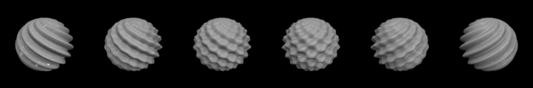

Making a series of shapes — batch processing¶
One of the purposes of ShapeToolbox is to provide a tool for making sets of stimuli with parametric variations in shape. This section illustrates the creation of some example series. There are different ways of creating a series of stimuli. The first, of course, is just to call an objMake*-function repeatedly while changing the parameters of the shape. This is demonstrated first.
ShapeToolbox also has batch-options for creating several shapes with a single function call; these are illustrated further below.
Making a series of stimuli¶
This section does not introduce any new functionality of the toolbox, it’s just calling the now-familiar function objMakeSine inside a simple Octave/Matlab loop.
The first example has a single component. The frequency is varied
from 2 to 16 cycles while the other properties stay constant. An
orthogonal envelope is used as in the previous examples. The value of
the variable feature, here frequency, is made part of the file name in
which the model is saved. The file names are sphere_f02.obj,
sphere_f04.obj, ... , sphere_f16.obj.
% Set a vector of frequencies
freq = [2 4 8 16];
% Set other parameters to constant values
a = .15; % amplitude
ph = 0; % phase
or = 0; % angle/orientation
% Loop through frequencies
for f = freq
% Set filename with frequency value
filename = sprintf('sphere_f%02d.obj',f);
% Make the model
objMakeSine('sphere',[f a ph or],[2 1 90 90],filename);
end
The code above produces a series of four objects which, rendered, will look like:

The next example also has a single component. The amplitude varies from 0 to 1 with other properties constant. The amplitude is included in the file name:
% Set a vector of amplitude
a = 0:.2:1;
% Set other parameters to constant values
f = 8; % frequency
ph = 0; % phase
or = 0; % angle/orientation
% Loop through frequencies
for ii = 1:length(a)
% Set filename with frequency value
filename = sprintf('sphere_a%03d.obj',100*a(ii));
% Make the model
objMakeSine('sphere',[f a(ii) ph or],[2 1 90 90],filename);
end
The rendered objects are shown below. With modulation amplitude 0 the object is a sphere. With higher amplitudes it’s... certainly not a sphere anymore:

One more example: Here we have two components, and we vary their amplitudes in opposition to smoothly transition from component-1-only to little-bit-of-both-components to component-2-only:
% Set amplitudes of the two components. These are between 0 and 0.1,
% in steps of 0.02, varied in opposition to each other.
a1 = .1:-0.02:0 % goes from 0.1 to 0.0
a2 = .1 - a1; % goes from 0.0 to 0.1
% Set other parameters to constant values
freq = 20; % frequency
ph = 0; % phase
or1 = -60; % angle/orientation of component 1
or2 = 60; % angle/orientation of component 2
% Loop through frequencies
for ii = 1:length(a1)
% Set filename with frequency value
filename = sprintf('sphere_%03d_%03d.obj',100*a1(ii),100*a2(ii));
% Make the model
objMakeSine('sphere',[freq a1(ii) ph or1; freq a2(ii) ph or2],[2 1 90 90],filename);
end
And the series of objects rendered:
Note that these are only examples of making and saving a series of stimuli. The particular stimuli produced are not necessarily interesting or informative to use in a vision experiment.
Batch option in objMake*-functions¶
Every objMake*-function has a “batch” option to create several models. This is a somewhat clumsy way to call the functions if you want to pass several arguments to them, but might be useful in some cases. To create several models, you define the model parameters in a cell array and pass the array to the function. In fact, it is a cell array of cell arrays, with each cell giving the parameters for one model:
prm = {{parameters for model 1},
{parameters for model 2},
...
{parameters for model N}}
The next example creates two cylinders. Both cylinders are perturbed by filtered noise, but the mean frequency is different:
prm = {{'cylinder',[6 1 0 30 .1],'cyl1.obj'},...
{'cylinder',[12 1 0 30 .1],'cyl2.obj'}};
objMakeNoise(prm);
The base shapes do not have to the same. The following creates a noisy cylinder and a noisy plane:
prm = {{'cylinder',[6 1 0 30 .1],'cyl.obj'},...
{'plane',[12 1 0 30 .1],'plane.obj'}};
objMakeNoise(prm);
objMakeBatch-function¶
The function objMakeBatch is a little more general than the
batch-option in the individual objMake*-functions (see above). Again,
several models can be created, and the model parameters are passed in
a cell array. The cell array can be given directly as an argument to
objMakeBatch or it can be defined in an m.-file and the file name
can then be given as an argument.
The perturbation type does not have to be the same for all models to
be created. That is, objMakeBatch can call different functions
that produce sinusoidal, noise, etc. perturbations. The perturbation
type is given as the first argument in each cell.
The following repeats what the last example above does:
prm = {{'noise','cylinder',[6 1 0 30 .1],'cyl.obj'},...
{'noise','plane',[12 1 0 30 .1],'plane.obj'}};
objMakeBatch(prm);
To make a noisy cylinder, a bumpy plane, and a smooth torus:
prm = {{'noise','cylinder',[6 1 0 30 .1],'cyl.obj'},...
{'bump','plane',[20 .1 .1],'plane.obj'},...
{'none','torus','torus.obj'}};
objMakeBatch(prm);
The same can be done by defining the parameter cell array prm in
an m-file and giving the filename as an input argument. If the
contents of the file modelparams.m is:
prm = {{'noise','cylinder',[6 1 0 30 .1],'cyl.obj'},...
{'bump','plane',[20 .1 .1],'plane.obj'},...
{'none','torus','torus.obj'}};
you would call objMakeBatch as:
objMakeBatch('modelparams.m');
In this case, modelparams.m should not contain anything else other
than the cell array definition, and the cell array should be named
prm.